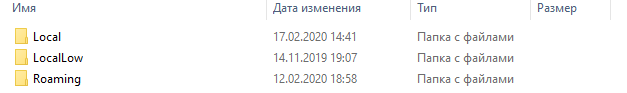

Если кто-то не знал или забыл, что такое моды, то я напомню, что моды - это модификации к игре, моды есть не только в майнкрафт, но и в других играх, например: The Elder Scrolls V: Skyrim.
В майнкрафте есть множество модов, есть например моды на оружие, моды на машины и прочие транспортные средства, моды на интерьер, моды на новые локации, моды на новые вещи, моды на новых боссов и множество других модов.
Вот пример модов в майнкрафт:
Также вам следует знать, что моды выпускаются сторонними разработчиками.
Приступим к установке. Собственно, для установки модов на майнкрафт, вам потребуется сам майнкрафт и моды к нему. Майнкрафт и моды можно скачать бесплатно по ссылке ниже. Также вам понадобится установить версию майнкрафта forge, в моём случае это forge 1.12.2, т.к. я использую моды версии 1.12.2, скачать версию forge 1.12.2 вы также сможете скачать по ссылке ниже.
После скачивания всех нужных компонентов, а именно: сам майнкрафт, моды на майнкрафт, forge нужной версии, можно переходить к установке.
Для открытия корневой папки майнкрафта вам нужно нажать комбинацию клавиш Win + R и написать в строке appdata, вот так:
После этого нажмите ок и у вас должна открыться вот такая папка:

После этого заходим в папку Roaming, должно получиться вот так: >

Потом заходи в папку .minecraft, должно получиться вот так:

Ищем папку versions, она у вас будет выглядеть вот так:

Заходим в неё и перетаскиваем туда ваш установщик forge, который вы скачали, в моём случае это forge - 1.12.2, должно получиться вот так:

После этого два раза кликаем на вашу версию forge и у вас должно открыться вот такое окно:

Нажимаем ОК и ждём оканчания загрузки.
Ну чтож, половина пути уже пройдена, осталось установить только моды.
Теперь выходим из папки versions и ищем папку mods, она будет выглядет у вас вот так:

Заходим в неё и перетаскиваем вами установленный мод, в моём случае это useful railroads, в эту папку, должно получиться вот так:

Всё, готово!
Здесь всё ещё проще, заходите в ваш лаунчер, в версиях указываете вашу версию forge, запускаете, наслаждаетесь игрой с модами!!!
Если всё таки остались какие-то вопросы, то пиши сюда: